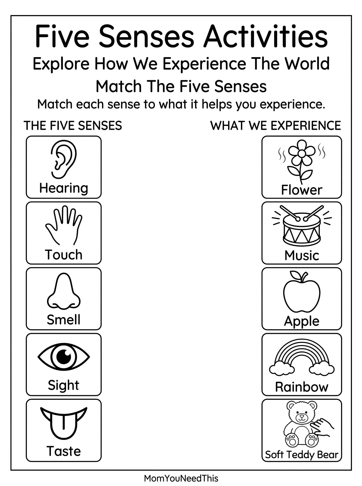

Five Senses Matching Activities Free Printable Five Senses Matching Activities For Kids
Help toddlers and preschoolers learn about sight, hearing, smell, taste, and touch with these fun, kid-friendly five senses matching activities. Children can practice connecting each sense with the body part or experience that helps them explore the world around them.
🖐️ Match The Five Senses
Use the activities to help your child recognize the five senses, make connections between their senses and the world around them, and build early science vocabulary.
Free Five Senses Matching Activities


How To Use These Activities
Ask your child to match each sense with the correct body part or example. Talk about what we use to see, hear, smell, taste, and touch. You can also cut out the pieces and turn the printable into a simple matching game for preschool or quiet learning time.
Why Learn About The Five Senses?
Learning about the five senses helps children understand how their bodies interact with the world around them. Matching activities also encourage observation, memory, vocabulary, and early science learning.
🎁 Keep Exploring Free Learning Activities
Discover more printable activities, toddler resources, and learning ideas created for busy parents.
🎁 View All Free Resources